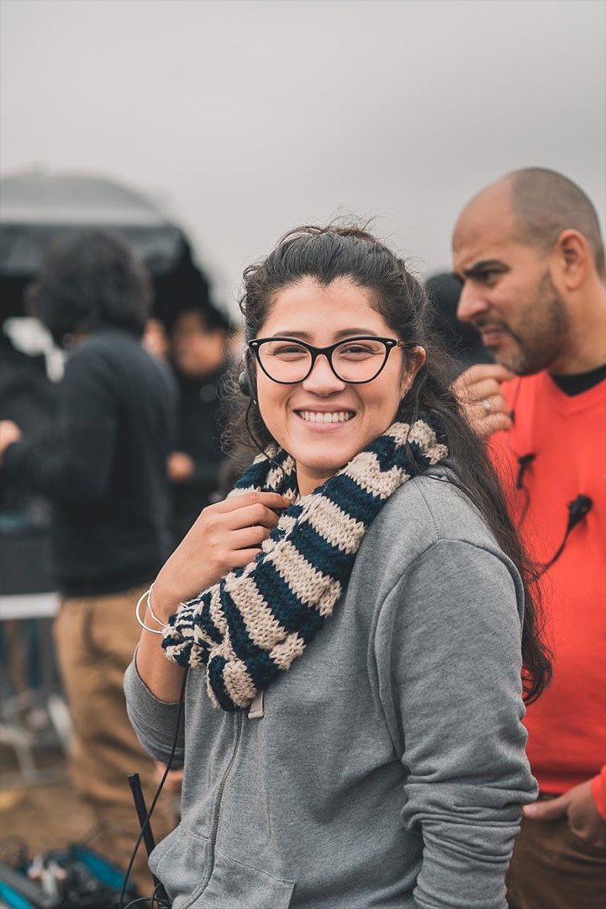

<!DOCTYPE html>
<html></html>
<head>
  <title>Bienvenidos - Lula Acosta</title>
  <link rel="stylesheet" href="css/styles.css"><link href="https://fonts.googleapis.com/css?family=Roboto:300,400&display=swap" rel="stylesheet">
</head>
<body> 
  <div class="logo"></div>
  <div class="social">
    <ul>
      <li><a href="https://www.instagram.com/" target="_blank"></a></li>
      <li><a href="mailto:productora@lulaacosta.com"></a></li>
      <li><a href="https://www.linkedin.com/in/lula-acosta/" target="_blank"></a></li>
    </ul>
  </div>
  <div class="about">
    <div class="resume overflow">
      <h1>yo</h1>
      <h2>Productora en cine y publicidad</h2>
      <p class="intro">Nací en Iquitos, Perú y desde que estaba en el colegio supe que quería ser productora de cine. Trabajar con grandes profesionales del medio peruano me hizo aprender que esta profesión es un constante crecimiento donde la pasión va de la mano de la vocación. Con orgullo digo que mi primera película fue Canción sin nombre hace un par de años. Busco crear una productora donde pueda contar historias que nos hagan sentir, que hablen por nosotros; producir una película es mi meta a corto plazo, y luego de eso no parar de crear. Sigo aprendiendo, y cada vez más segura de que esto es lo que me gusta.</p>
      <div class="experience">
        <h4>2011- 2016  UPC - Universidad Peruana de Ciencias Aplicadas</h4>
        <p>Bachillerato de Comunicaciones</p>
      </div>
      <div class="experience">
        <h4>2017  University of California, Riverside </h4>
        <p>Profesional Film Production 2017</p>
      </div>
      <div class="experience">
        <h4>TERA- Taller Escuela de Realización Audiovisual</h4>
        <p>Dirección y producción de Arte</p>
        <h4>TERA- Taller Escuela de Realización Audiovisual</h4>
        <p>Guión Audiovisual </p>
      </div>
      <div class="experience">
        <h4>2020   EPIC- Escuela de Cine y Artes Visuales</h4>
        <p>Producción Ejecutiva</p>
      </div>
    </div>
    <div class="foto"></div>
  </div> 
</body>